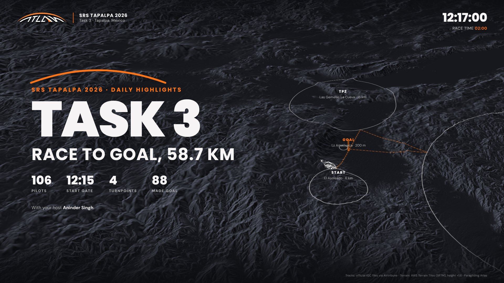
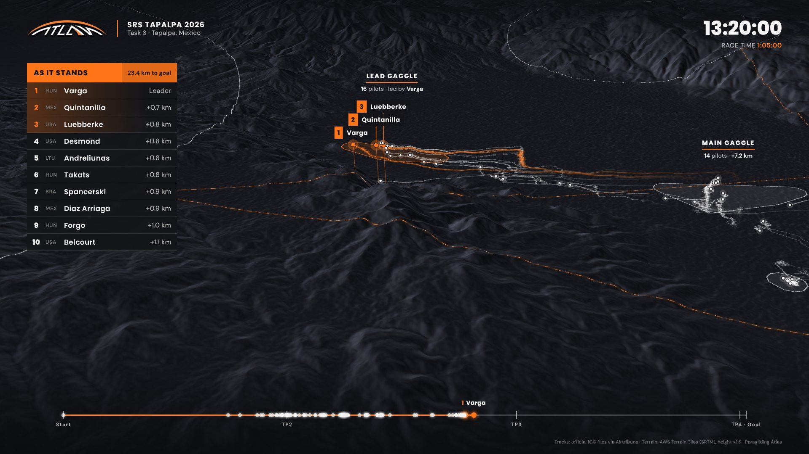
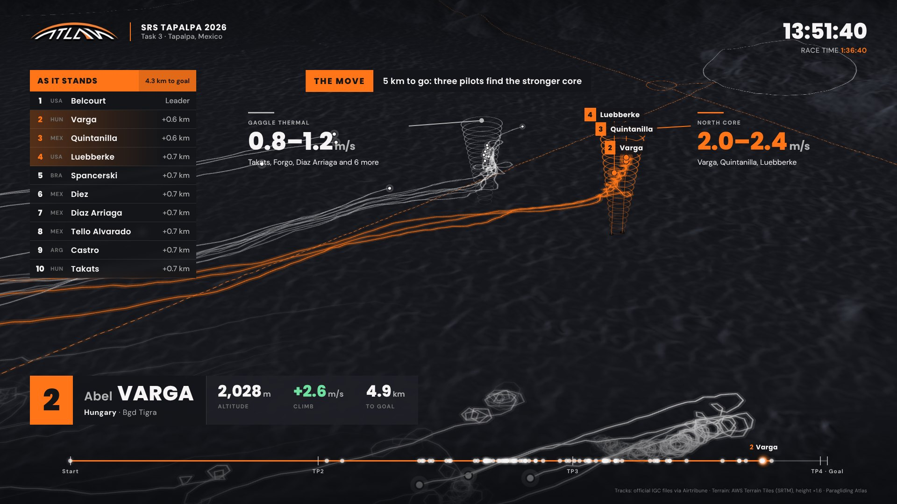
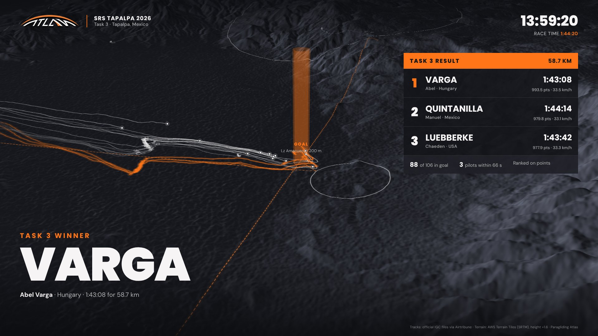

These are still frames from the real replay engine, using the real tracks of all 106 pilots at their GPS height over 3D terrain. The look is dark relief with glowing trails, Paragliding Atlas branding, and a graphics package that changes per scene. Every number is real, taken from the official IGC files and results.

1 · Cold open12:17, just after the start gate
Title card with the Atlas arc, task facts and your name; the course and the field at the start sit to the right.
In motion: the camera drifts slowly along the course while the title builds in.

2 · The race13:20, 23 km to go
Gaggles found automatically, outlined and labelled ("Lead gaggle, 16 pilots, led by Varga"; "Main gaggle, +7.2 km").
As it stands: the top 10 by real distance to goal, with the gap to the leader.
Course ladder: the whole field on one line from start to goal, so viewers always know where we are.

3 · The move13:51, 5 km to go
Thermal columns compare the two climbs side by side: the north core at 2.0–2.4 m/s (Varga, Quintanilla, Luebberke) and the gaggle's at 0.8–1.2 m/s.
Lower third for the pilot you're talking about: live height, climb and distance to goal.
Headline strip ("The move") gives the story in one line.

4 · The finish13:59, goal at Amacueca
Winner card and the top three with time, points and speed. Luebberke was faster than Quintanilla but ranked third on points, so the card says "Ranked on points".
The goal cylinder is the only solid wall in the scene, so the finish stands out.
Not shown in stills
Motion: orange wipe between scenes, numbers that count up, graphics that slide in, a slow camera move in every scene.
Clean feed for screen capture: no cursor or controls, fixed 16:9, and a hidden teleprompter on a second window.
North and wind cursor in a corner (you asked the other chat for this). The wind comes from the drift measured in the thermals.
What I need from you
Is the overall look right: dark relief, orange for the pilots in the story, white for the field?
Terrain height ×1.6 makes the hills read on camera. Keep it, or show true height?
Gaps in the tower: kilometres (as shown) or estimated seconds?
Anything to add or drop (pilot photos, gliders, flags, a mini-map)?
Tracks from the official IGC files via Airtribune · Terrain from AWS Terrain Tiles (SRTM). The working replay page is concepts/broadcast.html (append #f=1 to #f=4 for each frame).